Kaltētie ziedi kā dekors mājoklī raisa duālas sajūtas – no vienas puses, tiem piemīt specifisks šarms un trauslums, no otras, – tie asociējas ar putekļainiem vecmodīgiem mājokļiem pagājušā gadsimta septiņdesmito astoņdesmito gadu stilā, ar skumjām un iznīcību. Protams, sausie ziedi nav ne tik koši, ne smaržīgi kā to iepriekšējās – svaigās un dzīvīgās – versijas, taču, atbilstoši izkārtoti, kā interjera elements kļūst atkal aktuāli. Nelielas kaltētu ziedu kompozīcijas tiek izmantotas arī kā dāvanu noformējumu sastāvdaļas.
- graudaugi;
- astere;
- lietussargs;
- svins.
| Gelichrysum | 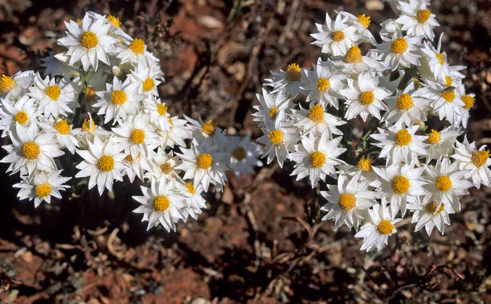 | Helopterum | 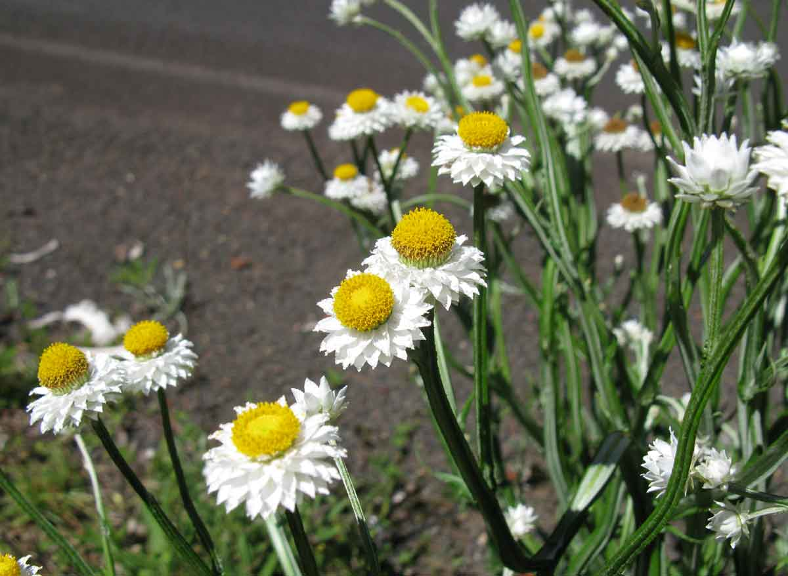 | Ammobium | 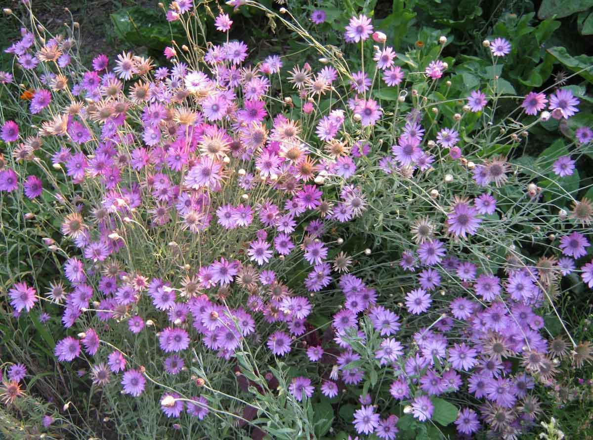 | Xerantemum | 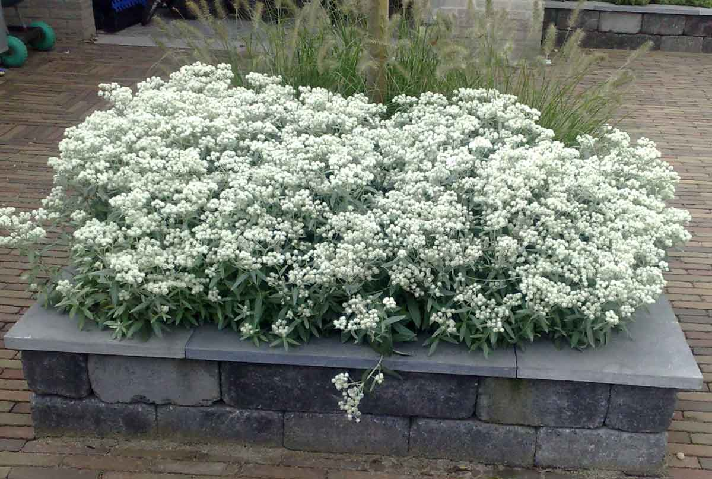 |
| Anafalis | 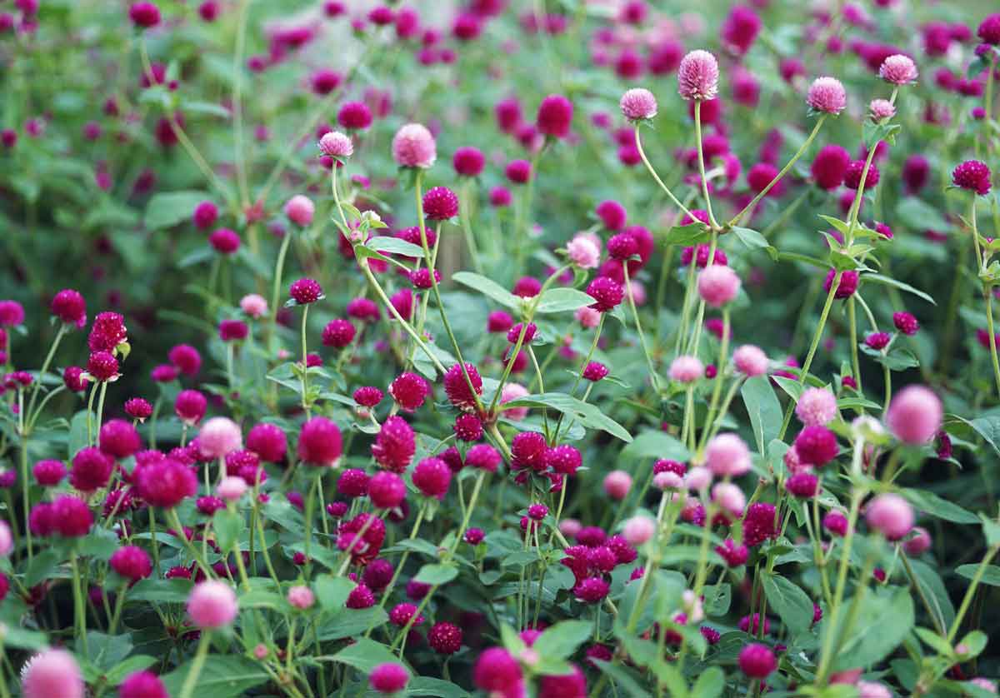 | Gomfren | 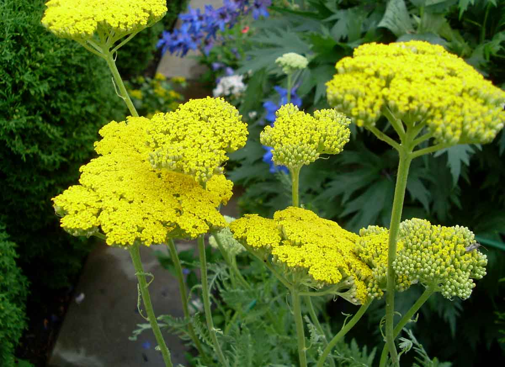 | Pelašķi | 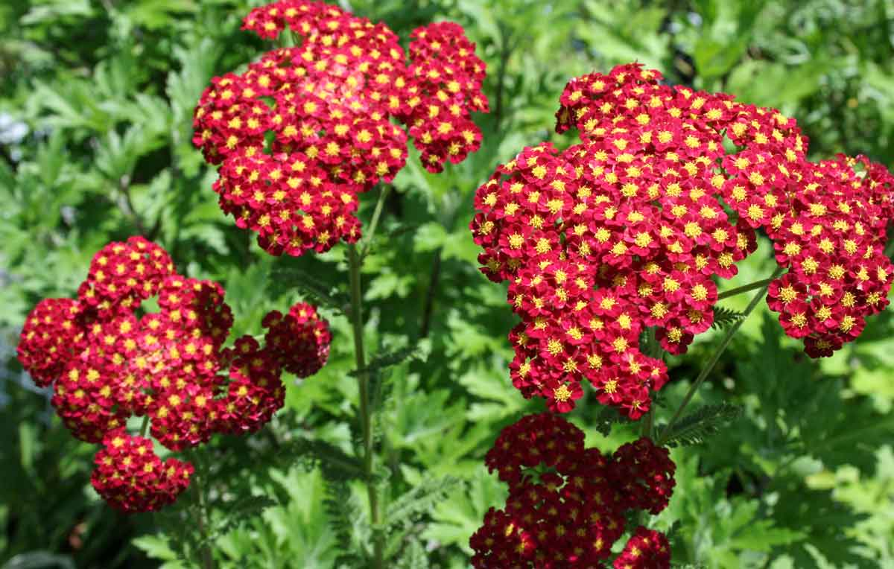 | Gypsophila | 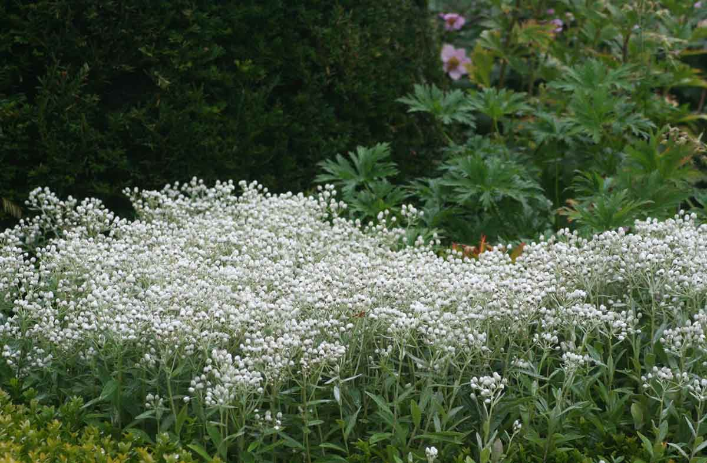 |
| Kermeka | 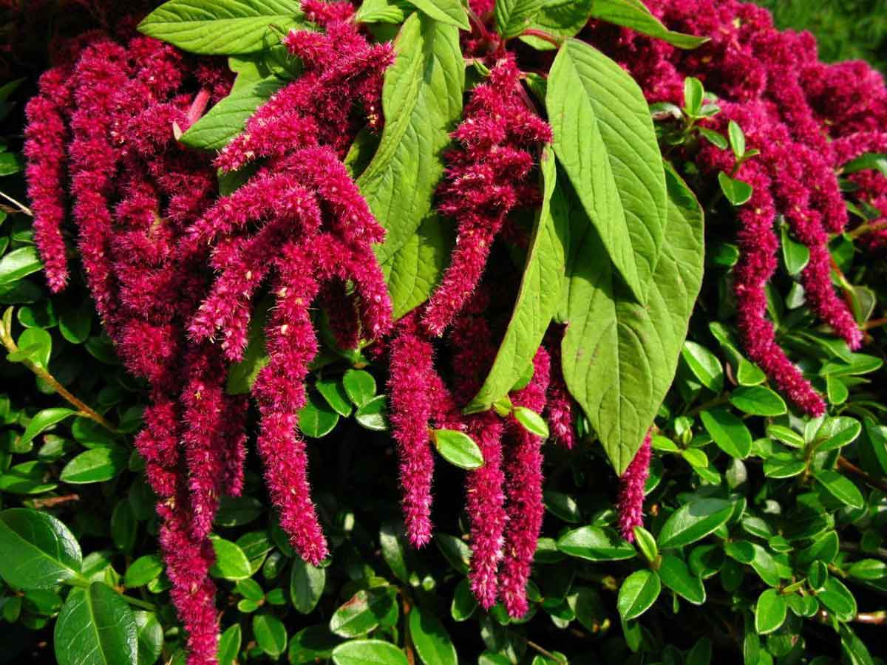 | Amarants | 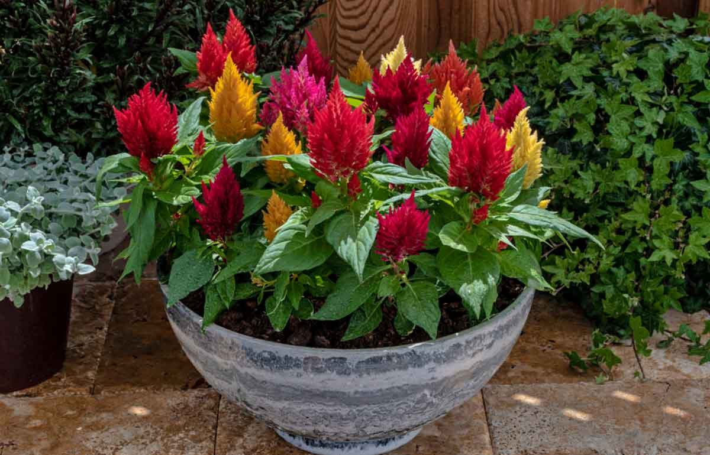 | Celosia | 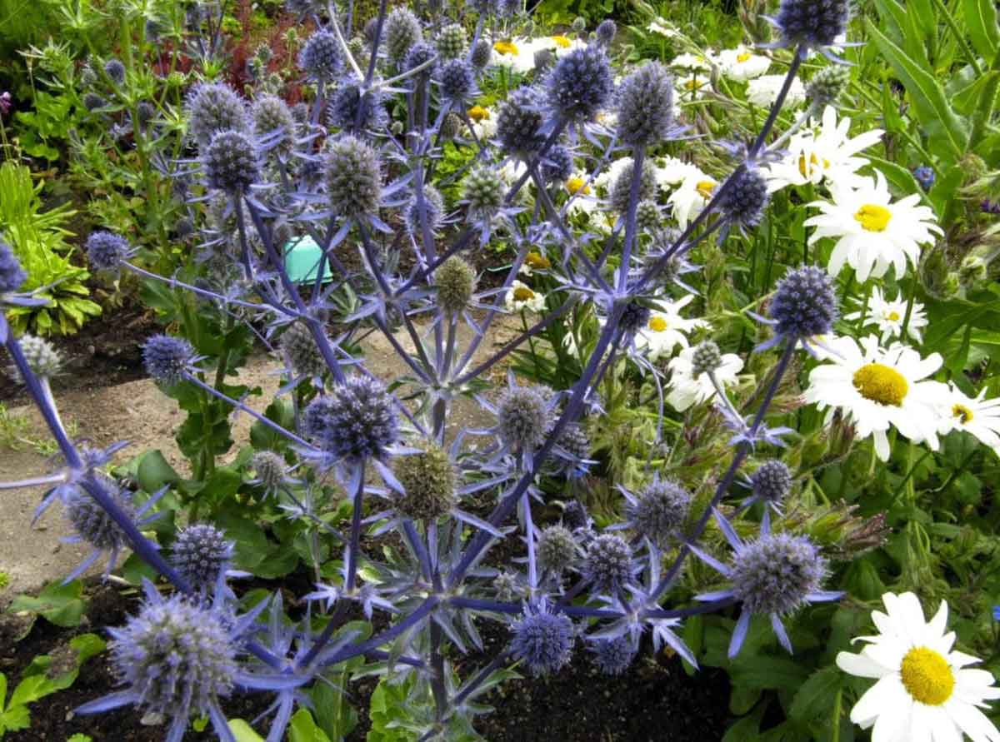 | Drudzis | |
| Limonijas | 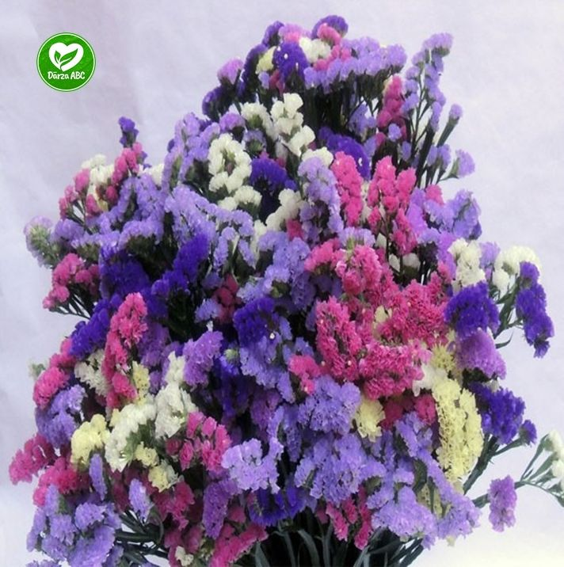 | Mēness | 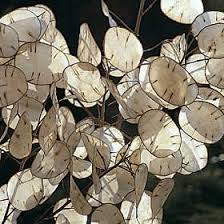 | Lavanda | 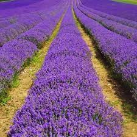 | Fizālis | 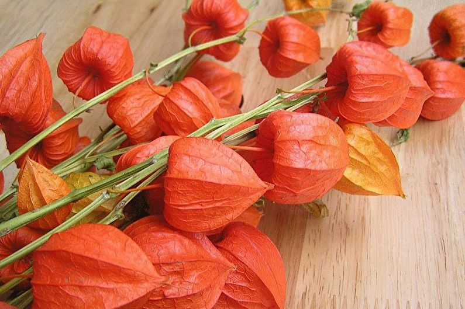 |
Sīkako informāciju par ziedu kopšanu un žāvēšanu jūs varāt atrast šeit
Floristika var būt interesants hobijs un attīstīt radošumu. Galu galā ziedu kompozīcijas ne vienmēr tiek veidotas pēc noteikumiem. Katram cilvēkam ir savas idejas par skaistumu un māksliniecisko gaumi. Floristiku var veikt pats, izmantojot mācību video, grāmatas un iegādājoties nepieciešamos rīkus. Saziņa ar dabu uzlabos garīgo stāvokli un sniegs estētisku baudu.